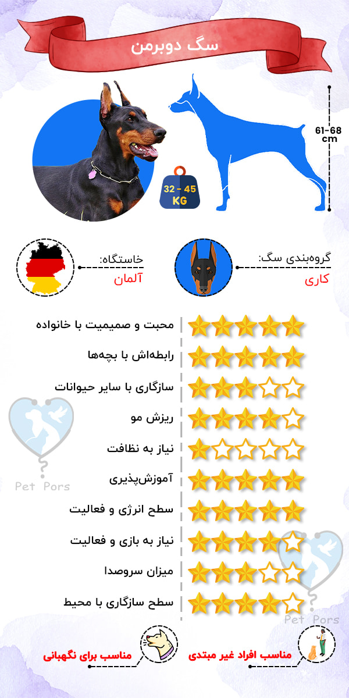
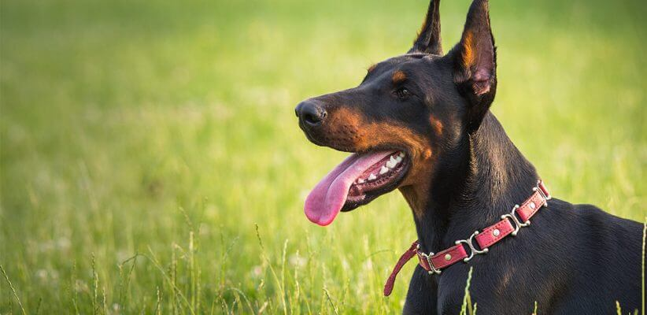
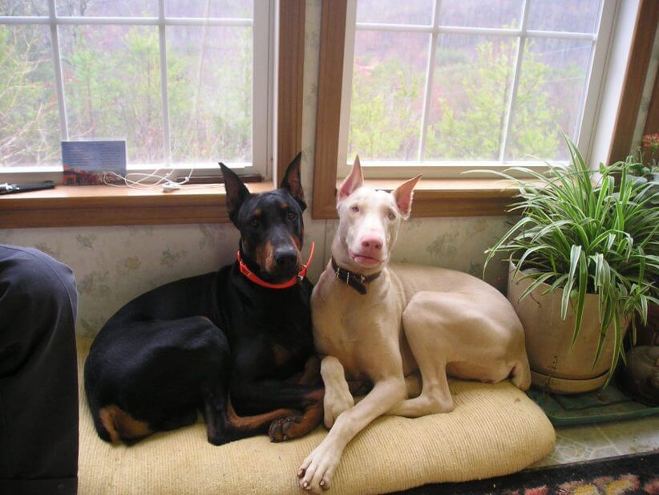
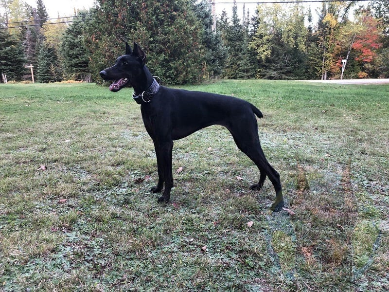
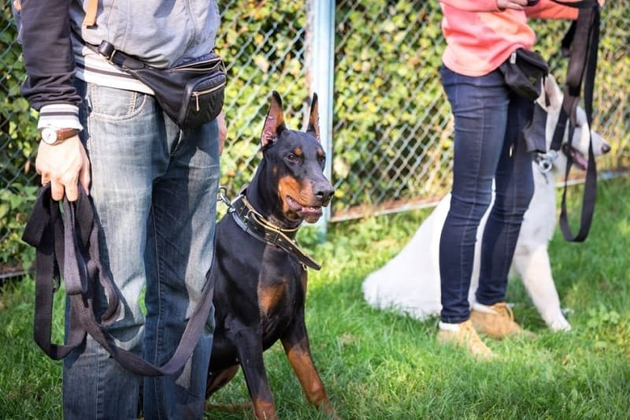
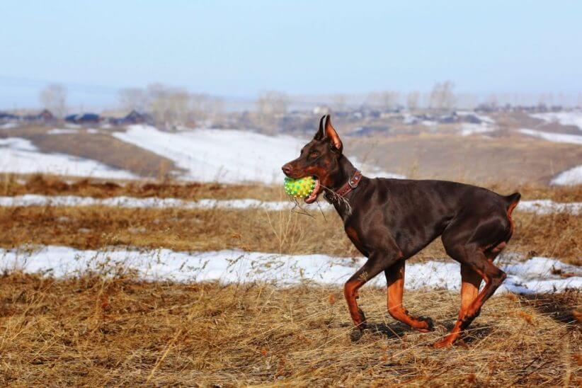
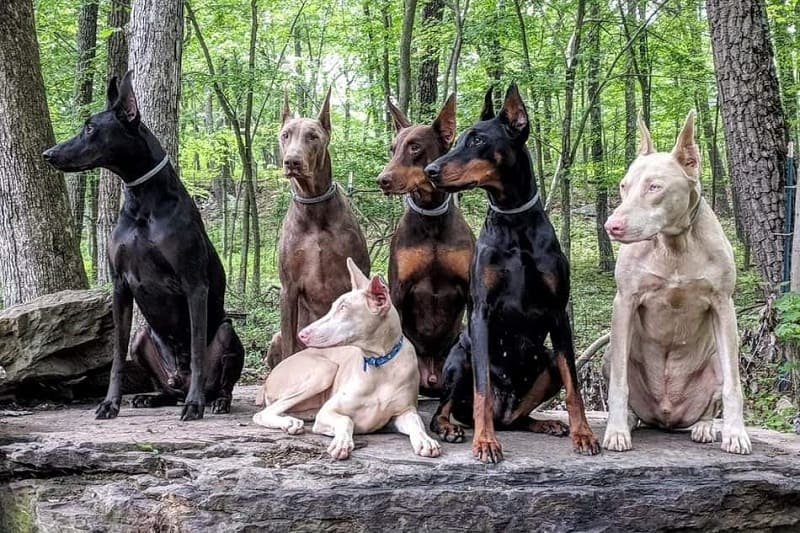

سگ دوبرمن پینشر (پینچر) یکی از نژادهای پرطرفدار توی ایرانه که بیشتر به عنوان سگ نگهبان نگهداری میشه. دوبرمن ها یکی از محبوبترین سگهای جهان به حساب میان که به خاطر عضلات ورزیده و توان بدنی بالا و هوش بسیار در کنار رقیبشون، ژرمن شپرد طرفدار دارن.
خیالت راحت ما این راهو بلدیم و قراره تو این مقاله پت پرس راجعبه مشخصات انواع سگ دوبرمن، شرایط نگهداری، بیماریها و برنامه غذایی و تمام نکاتی که باید بدونی، صحبت کنیم.
- یه سگ خانواده و همراه وفادار و از خود گذشته است
- نگهداری از موهای نژاد دوبرمن پینشر راحته
- ریزش موی زیادی نداره
- این نژاد جزو بهترین سگ های نگهبان هست و به صورت غریزی این کار انجام میده
- دوبرمن پینشر ها بسیار باهوش هستن و اگر صاحبشون در تربیت سگ باتجربه باشه، بسیار راحت تربیت میشن
- این نژاد برای افراد فعال و ورزشکار سگهای خوبی هستن چون پایه بدو بدو و فعالیتن
- برای کسانی که تاحالا سگ نداشتن انتخاب مناسبی نیستن
- برای خانواده هایی که بچه خیلی کوچیک (زیر ۵ سال) دارن انتخاب خوبی نیستن
- نیازشون به فعالیت بدنی بسیار بالاست
- اگر به خوبی تعلیم نبینن و اجتماعی نشن، ممکنه احساس غالب بودن بهشون دست بده (هوا ورشون میداره!)
- برخی از سگهای دوبرمن پینشر بعد از مدتی بداخلاق میشن و به مشکل برمیخورن
- ممکنه در برابر سگها و حیوانات دیگه خشونت نشون بدن
- این نژاد به صداهای بلند حساس هستن
- این نژاد بیماریهای نژادی زیادی داره برای همین اگر توی فکر خرید یه دوبرمن هستین بدونین که برای بیماریهاش باید هزینه زیادی باید به دامپزشک پرداخت کنین.

تاریخچه به وجود آمدن سگ نژاد دوبرمن پینشر
داستان تاریخ نژاد دوبرمن پینچر بسیار جالبه چون این نژاد اسمش رو از یه مامور مالیات آلمانی به نام کارل فردریک دوبرمن گرفته که در سال ۱۸۰۰ این نژاد رو به وجود آورد.
آقای دوبرمن فقط یه مامور مالیات نبود؛ این آقا یه کار دیگه هم داشت و اون این بود که شبها نگهبانی بده و چون با سگها میونه خوبی داشت قادر بود بهترین سگ رو برای همراهی با خودش موقع نگهبانی انتخاب کنه. این مرد دوست داشت نژادی به وجود بیاره که شجاع، قوی و باهوش باشه و بتونه همراه باهاش کار نگهبانی رو انجام بده.
سگهای نگهبان به داشتن قدرت بویایی تیز و آرواره قوی و توانایی ذاتی برای نگهبانی و مراقبت معروف هستن. آقای هر دوبرمن پینچر با پرورش سگها و انتخاب سگی که بیشترین میزان این تواناییها رو داشت، تونست نژادی رو به وجود بیاره به نام “دوبرمن هاندل“.
بعدها این نژاد توسط افراد مختلف با نژادهای دیگه ترکیب شد تا سگهای دوبرمن امروزی به وجود بیان.

حقایقی جالب درباره این نژاد
- این نژاد سگهای بسیار باهوشی هستن برای همین در سراسر جهان از اونها به عنوان سگ پلیس استفاده میشه.
- بخاطر اینکه نژاد دوبرمن پینشر در سال ۱۸۰۰ به وجود اومده، یه نژاد تازه و جوان به حساب میان.
- سگهای دوبرمن بخاطر کمک به انسان ها در طول جنگ جهانی دوم، قهرمان جنگ به حساب میان.
- بریدن گوش سگ و یا دم که خیلی هم در ایران شایع هست، عملیه که درد و رنج زیادی رو به حیوان تحمیل میکنه. به همین دلیل در بسیاری از کشورهای جهان غیرقانونی اعلام شده. این عمل هیچ ضرورت دامپزشکی یا تربیتی نداره و فقط توسط دامپزشکان سودجو انجام میشه.

مشخصات سگ دوبرمن پینشر اصیل
قد:
- نرها: ۶۸ تا ۷۲ سانتی متر
- مادهها: ۳۲ تا ۳۵ سانتی متر
وزن:
- نرها: ۴۰ تا ۴۵ کیلوگرم
- مادهها: ۳۲ تا ۳۵ کیلوگرم
نکات کلیدی در ظاهر این سگ:
- رنگ چشم و بینی این نژاد با رنگ پوشش بدنشون هماهنگه.
- گوشهای دوبرمنها ممکنه برافراشته یا افتاده باشه.
- گردن دوبرمنها بلند و لاغره و شانههایی عضلانی دارن.
- پوشش بدن سگ کوتاه، ضخیم، سفت و صافه.
- نژاد دوبرمن پینشر ظاهری مغرور و تاثیرگذار داره و با هیچ نژاد دیگهای از نظر ظاهری شباهت نداره.
- بدن این نژاد ورزشکاری و متعادله و در نگاه اول میشه پی به قدرت زیادشون برد. حتی سگ پلیسی دوبرمن رو با تمرینات و تغذیه خاص عضلانیتر هم میکنن.
تنوع رنگ سگهای دوبرمن
پوشش بدن دوبرمنها معمولا دورنگ هست. یه رنگ زمینه و رنگ دیگهای که لکه های روی بدنشون رو شامل میشه.
این دو رنگ میتونن ترکیبی از رنگهای زیر باشن:
- مشکی و قرمز زنگاری (قرمز زنگاری یعنی رنگ آهن زنگ زده!)
- خاکستری و قرمز زنگاری
- قهوهای تیره و قرمز زنگاری
- قهوهای روشن و قرمز زنگاری
لکههای رنگی پوست دوبرمن پینچرها جاهای مشخصی از بدنش قرار گرفتن و معمولا روشنتر از رنگ کلی بدن دیده میشن.
این لکهها رو میتونین به خوبی در قسمتهای زیر ببینید:
- بالای هر دو چشم
- روی پوزه و گلو
- قسمت جلویی سینه
- روی دست و پاها
- زیر دُم
انواع سگ دوبرمن پینشر
به طور کلی دو نوع دوبرمن در دنیا وجود داره:
- دوبرمن آمریکایی
- دوبرمن اروپایی
تفاوت ظاهر دوبرمن آمریکایی و اروپایی
| دوبرمن اروپایی | دوبرمن آمریکایی |
|---|---|
| بزرگتره (قدبلندتر و وزن بیشتر) | کوچکتره (کوتاهتر و وزن کمتر) |
| اندام درشتتری داره | اندامی ظریفتر و خوشتراشتر |
| سر و پوزهای بزرگتر و پهنتر داره | سر و پوزهای باریکتر و درازتر |
| سر و پوزهای بزرگتر و پهنتر داره | سر و پوزهای باریکتر و درازتر |
| استخونبندی درشتتری داره | بدنی کشیدهتر |
| چشمهایی تیرهتر | چشمهایی روشنتر |
| سینهای ستبر و پهن داره | سینهای کوچکتر |
تفاوت رفتاری و خلق و خوی دوبرمن اروپایی و آمریکایی
| دوبرمن اروپایی | دوبرمن آمریکایی |
|---|---|
| سگ کار شناخته میشه | کمتر به عنوان سگ کار شناخته میشه |
| شجاع | این گونه برای نمایش و اجرا به وجود اومده |
| آرام | خلق و خویی آرومتر داره |
| پرطاقت، پرانگیزه و مصمم | اجتماعیتر و مهربونتره |
| هشیار و گوش به زنگ | بیشتر اهل خانواده است |
| در موقعیتهای جدید اعتماد به نفس بیشتری داره | باوقارتر و زیباتره |
| به دستورات مشخص و شفاف بهتر جواب میده | اما شجاعت و جسارت کمتری هم داره |
این رو هم اضافه کنیم که میکسهای مختلفی ممکنه از دوبرمن وجود داشته باشه که گاهی مواقع خیلی توصیه نمیشه و در برخی موارد هم نتیجه جالبی داره. یکی از این انواع سگ ژرمن دوبرمن به حساب میاد. میکس ژرمن و سگ دوبرمن که قابلیتهای هر دو سگ رو به طور نسبی داره و دارای وزنی حدود ۴۰ تا ۵۰ کیلوگرم است.
سگ دوبرمن سفید
اخیرا دیده شده برخی از پرورش دهندهها پینچرهایی به رنگ سفید رو پرورش میدن و به قیمت بالایی به فروش میرسون.
باید توجه کنین که سگ دوبرمن سالم به رنگ سفید وجود نداره و سگهای سفید، زال یا آلبینو هستن. زالی یا آلبینیسم یک نقص ژنتیکی به شمار میاد؛ به این معنی که رنگدانه سیاه در بدن این سگها تولید نمیشه یا خیلی کم تولید میشه.
اگر سفید رنگ بودن سگ شما رو جذب میکنه باید بهتون بگم که دوبرمنهای سفید مستعد به ابتلا به تعداد زیادی بیماریهای نژادی مثل کری مادرزادی هستن. این دوبرمنها مثل انسانهای زال به نور حساسیت دارن و در نور زیاد نمیتونن دید خوبی داشته باشن.
همین ویژگی حساسیت و هراس از نور چون جلوی آگاه شدن کامل سگ نسبت به محیط اطرافش رو میگیره، باعث میشه سگ دوبرمن سفید مستعد ابتلا به مشکلات رفتاری سگ ها مانند گاز گرفتن بشه. اگر تو این زمینه با سگتون مشکل دارین و نمیدونین باید چیکار کنین؛ بهتره مقاله «گاز گرفتن سگ» بخونین تا بدونین در چطور از گاز گرفتن سگتون جلوگیری کنین.
در خیلی از کشورهای دنیا، به خاطر همین مشکلات پرورش دوبرمنهای سفید ممنوع اعلام شده.
dpca.org
به همین دلیل پت پرس توصیه میکنه موقع خرید سگ دوبرمن، رنگی غیر از سفید رو انتخاب کنین.

سگ دوبرمن مشکی (تماماً سیاه)
همونطور که در بالا گفتیم نژاد دوبرمن اصیل دو رنگه و لکههایی روی صورت و بدنش داره. در صورتی که این نژاد با یه نژاد کاملا سیاه ترکیب بشه ممکنه دوبرمن مشکی یا تماماً سیاه به وجود بیاد. اما در این صورت این سگ دیگه یه نژاد خالص و اصیل محسوب نمیشه؛ اما ممکنه پرورش دهنده و خریدار اینو به شما نشون بده و ادعا کنه که سگ دوبرمن مشکی اصیله.
البته در موارد بسیار نادری ممکنه سگ دوبرمن مشکی هم داشته باشیم. این پدیده در واقع به خاطر جهشی ژنتیکی به نام ملانیسم یا سیاهی غیرطبیعی در سگ دوبرمن به وجود میاد که در اثر اون رنگدانه ملانین در پوست بیش از حد تقویت میشه و در مقابل آن آلبینیسم یا زالی قرار داره.
ازونجایی که این پدیده یک جور اختلال ژنیتیکی به حساب میاد پرورش دهندهها معمولا اقدام به تکثیر و پرورش این نوع سگ دوبرمن نمیکنن.

خلق و خوی این نژاد پرطرفدار
این نژاد در عین حال که سگهایی هوشیار، شجاع و مغرور هستن ویژگیهای دیگهای مثل وفادار بودن، فداکار و همدلی رو هم از خودشون بروز میدن.
این نژاد بسیار بسیار باهوشه و البته این ویژگی میتونه گاهی به ضرر شما باشه. این سگها میتونن از هوششون برای گول زدن صاحبشون استفاده کنن!برای همین سگ پلیسی دوبرمن میتونه خوب از پس مجرمها بربیاد. اگر این ویژگی رو بذاریم کنار دوبرمنها سگهایی آرام و با اخلاق هستن که با صاحبشون پیوند دوستی قوی برقرار میکنن.
ارتباط این نژاد با انسانها
سگهای دوبرمن میتونن به یه سگ خانواده خوب تبدیل بشن. غریزه نگهبانی و محافظت کردن این نژاد بهشون کمک میکنه تا به محض وارد شدن به خونواده شروع به مراقب از تمام اهل خونه کنن.
البته مراقب باشید که سگتون بیش از حد محافظه کار نشه. دوبرمنها ممکنه بیش از حد به مراقبت از بچههای خونواده حساسیت نشون بدن و در حضور غریبهها براتون مشکل ایجاد کنن.
به طور کلی خلق و خوی نگهبانی این سگها ایجاب میکنه نسبت به غریبهها حساس باشن و برای همین در مواجهه اولشون با هر شخص غریبهای عاقلانه است که بسیار بااحتیاط عمل کنین.

اصول تربیت توله سگ دوبرمن پینچر
تربیت سگ دوبرمن یکی از مهمترین اقداماتیه که باید حتما از زمان تولگی جدی گرفته بشه. دوبرمنهایی که تربیتشون جدی گرفته نشه در بزرگسالی سگهایی خشن، خودسر و دارای انواع مشکلات رفتاری میشن که صاحبانشون رو اذیت میکنن.
از تولگی با یاد دادن فرامین مقدماتی (مانند بیا، بشین، بمون، ساکت و …) به توله سگ دوبرمن، عادتش بدین که از دستوراتتون پیروی کنه.
نگهداری از سگ دوبرمن که عادت کنه به حرف صاحبش گوش بده، هم راحتتره و هم لذت بخشتر.
برای تربیت درست دوبرمن:
- از تولگی شروع کنید.
- در آموزش به سگ مصمم و قاطع باشید.
- حتما روزی ۱۵ دقیقه برای آموزش به سگ زمان بگذارید.
- با سگ برخورد و رفتار صحیح رو انجام بدید
- دوران طلایی اجتماعی کردن سگ رو که ۲ تا ۴ ماهگی هست جدی بگیرید
- به زندگی سگ نظم و قانون ببخشید
- از تولگی چالشهایی رو برای سگ تعیین کنید
آیا تربیت سگ دوبرمن سخته؟
ظاهر کمی خشن و هوش بالای این سگ باعث شده خیلیها فکر کنن تربیت سگ دوبرمن خیلی سخته و به همین دلیل اصلا سمت این سگ نرن. در صورتی که اینجوری نیست، تربیت این سگ به اون سختیها هم نیست!
در عین حال که رسیدگی و تربیت اشتباه میتونه این نژاد رو به سگهایی وحشی و پرخاشگر تبدیل کنه، آموزشهای درست، اون رو به دوست بینظیری برای آدما تبدیل میکنه. یادتون نره که دوبرمن یکی از خطرناک ترین سگهای دنیا محسوب میشه، پس برای تربیتش به اندازه کافی وقت بزارین!
تربیت سگ دوبرمن نگهبان
تربیت سگ نگهبان کاری تخصصیه که نیاز به اطلاعات فراوانی داره. اما پینچرها میتونن برای دو منظور آموزش ببینن: برای گارد یا گرفتن و پاسبانی که فقط هشدار بده. اما میشه پینچرها رو طوری تربیت کرد که هم پاسبان خوبی باشن و هم موقع خطر، هشدار بدن. میشه طوری آموزششون داد که فقط به دزد حمله کنه و اون بگیره، ولی آسیب کشنده وارد نکنه و با خانواده و صاحبش اصلا خشونت نشون نده.
دانلود کتاب الکترونیکی تربیت سگ دوبرمن از توله تا نگهبان میتونه کمک خوبی باشه
در این کتاب، در ۳۴۰ صفحه از اول تربیت سگ دوبرمن رو کامل و اصولی از روز اول تا وقتی به یه سگ نگهبان با ابهت تبدیل بشه، آموزش دادیم. اگر میخواید سگتون رو برای نگهبانی تربیت کنید، دانلود و مطالعه این کتاب از نون شب واجبتره.
نکاتی که تو نگهداری از نژاد سگ دوبرمن نباید فراموش کنید!
این نژاد برای نگهداری بیرون از منزل زیاد مناسب نیست و بهتره داخل خونه باشه. علت این موضوع هم نیاز بسیار زیاد این سگ به رابطه داشتن و معاشرت با انسانها بخصوص صاحبشه.
نکته دیگهای که در مورد دوبرمن پینشر باید به خاطر داشته باشید اینه که این نژاد غریزه شکار بالایی داره و از تعقیب حیوانات کوچک و گرفتنشون لذت میبره؛ برای همین وقتی در منزل نیست باید همیشه با قلاده باشه.
اگر یه سگ دوبرمن رو با صبر و حوصله آموزش بدین و باهاش مهربون باشید، بهتون قول میدم نتیجه کارتون میشه یه سگ خوش رفتار که براتون یه دوست خوب باقی میمونه.
برعکس این حالت موقعی اتفاق میوفته که این نژاد با یه صاحب ناشی مواجه بشه که آموزش دادن درست رو به این نژاد بلد نیست. در این حالت تبدیل به سگی لجباز و یک دنده، نافرمان و کنترل ناپذیر که زندگی رو به کام همه تلخ میکنه.

بیماریهای نژادی و سلامتی
عمر متوسط دوبرمن در صورتی که ازش به خوبی نگهداری بشه و غذای خوب بخوره بین ۹ تا ۱۲ ساله. البته تغذیه و نگهداری از سگ به طور صحیح تاثیر مستقیمی روی طول عمرش داره.
مثل خیلی از نژادهای دیگه چندین بیماری نژادی وجود دارن که در این سگها زیاد دیده میشن. اگر یه دوبرمن دارید یا قراره این نژاد رو انتخاب کنید، بهتره از این بیماریهای نژادی اطلاع داشته باشید تا به محض مشاهده علائمش اقدامات درمانی لازم رو انجام بدید.
بیماریهای نژادی متداول این نژاد
بیماریهای سگ که توی این نژاد رایجتر هست شامل:
- بیماری قلبی تروپونین
- بیماری وان ویل برند (Von Willebrand’s disease)
- دیسپلازی مفصل ران
- کاردیومیوپاتی اتساعی یا DCM
- کم کاری تیروئید
- سندروم وابلر (اسپاندیلوز مهره های گردنی)
- آرتریت (بخصوص در سگ های مسن)

بهترین غذای سگ دوبرمن
غذای این نژاد باید سرشار از پروتئین باشه. این سگ به خاطر سوخت و ساز بالای بدنش باید بتونه مواد مورد نیاز اعم از پروتئین و چربی مفید و انواع ویتامینها رو دریافت کنه. بهخصوص در تولگی و زمان طلایی رشدش.
پس اگه قراره چنین سگی رو به سرپرستی بگیرین، بهتره در مورد غذای دوبرمن اصیل اطلاعات کامل داشته باشین. ما قبلاً تو مقاله «غذای سگ دوبرمن» براتون برنامه غذایی این نژاد رو از تولگی تا بزرگسالی آوردیم.
قیمت سگ دوبرمن اصیل در ایران چقدره؟
قیمت نژاد دوبرمن در ایران بسیار متغیره و برای این نژاد قیمت واحدی وجود نداره.
این نژاد در بازار در بازه قیمتی ۴ تا ۸ میلیون تومن به فروش میرسه!!
متاسفانه به دلیل تقاضای بالا برای خرید این نژاد افراد زیادی که تخصص و اطلاعات کافی درمورد پرورش سگ ندارن از این نژاد رو توله کشی کرده و به مردم میفروشن.
خیلی از سگهای موجود در بازار سگ دوبرمن اصیل نبوده و میکس این نژاد با نژادهای دیگه هستن و در تولگی هم این اصیل نبودن از روی ظاهر مشخص نمیشه؛ برای همین موقع خرید سگ خیلی دقت کنین و از یه متخصص کمک بگیرین.
یکی از معروفترین میکسهای این نژاد، شیانلو دوبرمنها هستن که ترکیب نژاد سگ دوبرمن و سگ شیانلو هستن.
توصیه دامپزشک برای خرید این نژاد
موقع خرید دوبرمن نکات زیر رو رعایت کنین:
- سگ رو از یه پرورش دهنده مطمئن، شناخته شده و حرفهای خریداری کنین.
- حتما از پرورش دهنده بخواین عکس پدر و مادر توله و حتی خواهر و برادرهاش رو به شما نشون بده.
- از خرید توله زیر ۲ ماه خودداری کنین
- از خرید دوبرمن بالای ۴ ماه خودداری کنین.
- به هیچ عنوان سگی که گوش یا دمش قطع شده رو خریداری نکنین.
- همه مبلغ رو همون اول به پرورش دهنده ندید و ازش برای بردن سگ به کلینیک دامپزشکی زمان بخواهید.
- پس از گرفتن سگ مستقیم به یه کلینیک دامپزشکی خوب برید و از دامپزشک بخواین برای سگ کیتهای مخصوص تشخیص بیماریهای دیستمپر و پاروا در سگ بذاره و از نظر بالینی کامل معاینهاش کنه.
جمعبندی
سگ دوبرمن میتونه انتخاب خوبی برای شما باشه، به شرطی که سبک زندگیتون با شرایط نگهداری از این نژاد در تضاد نداشته باشه. میزان تحرک، آموزش کافی، تغذیه مناسب جزو مهمترین اقداماتی هستن که باید برای دوبرمن پینشر خودتون انجام بدین.
پت پرس در تمام مراحل نگهداری از این سگ جذاب و قوی، کنار شماست. شما کدوم یک از نژاد سگ دوبرمن رو برای به خونه آوردن، انتخاب میکنین؟
سگ نخرید، به سرپرستی بگیرید!
نداری به سرپرستی بگیرم؟خیلی دلم میخواد جاهم دارم خونمون ویلایی باغ داره حتی تو اتاقم میتونم بیارم ولی پول ندارم:( طوریش هم بود مشکلی ندارم مثلا معلول باشه یا کور باشه یکم پیگیری میکنی کسی داشته باشه نخوادش به هر دلیلی؟ آیدی اینستام هم میزارم dontdiewonderin.g ؟؟! 🙏🏼
سلام محمدحسین عزیز،
پیج ها و سایتای واگذاری متعددی هستن که رایگان حیوونشون رو واگذار میکنن؛ مثل وبسایت رابینسه. اینکه نخواین برای داشتن حیوون هزینه ای بابت “خود حیوون” پرداخت کنین کاملا درسته ولی اینو هم درنظر داشته باشین نگهداری حیوون ماهانه یه حداقل هزینه ای رو براتون داره (غذا، جای خواب، دامپزشک و …) که لازمه مسئولیت این قسمت رو قبول کنین خصوصا اینکه نژادش بزرگه و لازمه غذای کافی و باکیفیت براش تهیه کنین.
مرسی از شما بابت پاسخ دادنتون بنده وضع مالی معمولی دارم نه خیلی خوب نه بد پدرم قانع نمیشه برای حیوون پول بده ولی هزینه غذا و واکسن و دامپزشکیو پرداخت میکنه حتی عمل هایی ک ممکنه پیش بیاد
از چند نفر هم پرسیدم میشه غذای ناهار شام خودمو بدن گفت ک پخته باشه حتما و بدون استخون مشکلی نداره
برای سایت ها هم سگه مورد علاقم نیست حتی دارای معلولیت هم باشه قبول میکنم سگی ک دوست دارمو
راستش ۲تا توله سگ پیدا کردم به فاصله ۶ماه ۶ماه، بزرگشون کردم و واکسن غذا و تا جایی ک میفهمیدن تربیتشون کردم ولی نژادشون ب دلم نمی نشست و دادم ب مراکز نگه داری سگ بی سرپرست
سلام
مطلب مقاله شما درباره نژاد سگ دوبرمن کامل دقیق و علمی بود
سپاس از شما
ممنون از لطفتون
سلام لطفا نحوه صحیح تربیت سگ دوبرمن رو میذارین تو یکی از کامنت خوندم که اگه بخوایم برامون میذاریم من میخوام خودم تربیت کنم میشه راهنمایی کنید ممنون از اطلاعات خوبتون
سلام
بله
لطفا در سایت ثبت نام کنید و از دامپزشک بخواید مستقیم براتون توضیح بده.
صفحه انتخاب حساب کاربری و ثبت نام:
مشاور آنلاین دامپزشکی
سلام
فرق خریدن با به سرپرستی گرفتن چی هست ؟
سلام ارژنگ عزیز،
وقتی شما یه حیوونی رو به سرپرستی میگیرین کاملا رایگانه و به این خاطر انجام میشه که هیچکدوم از طرفین اون حیوون رو به دید کالا نگاه نمیکنن. باتوجه به شرایطای غیراستاندارد پرورش دهنده ها که چندتا والد نژاددارو مدام توله کشی میکنن و در سلامت مناسبی نیستن، توله هارو سریع از مادر جدا میکنن و اکثرا یا مشکلات نژادیو بیشتر نشون میدن یا بخاطر شرایط بد نگهداری دچار خیلی بیماریا میشن. درواقع با خریدن حیوونا شانس زندگی رو از کلی حیوون بی سرپرست تو کشور میگیریم.
سلام
من یه توله دوبرمن گرفتم با اینکه حدودا دوماهشه نسبت ب غریبه ها خیلی حساسه و حتی سعی در این داره ک در مقابل اونا ازمن محافظت کنه و نمیزاره بم نزدیک شن و…
فقط رو قسمت جلویی قفسه سینه و پنجه پاهاش لکه کوچیک رنگ سفید داره دلیلش ناخالص بودن سگه؟؟؟
البت پدر و مادرش رو دیدم اصیل بودن
کامران جان
لطفا سوالتون رو در صفحه دامپزشک آنلاین بپرسید تا بتونیم بهتر راهنماییتون کنیم.
به شدت از سگ ها خوشم میاد .
واقعا سایت خوبی هستید ..من به فامیل هام می گویم از این سایت استفاده کنند
نظر لطف شماست
سلام
خودم هم میتونم آموزش بدم؟
امکان داره تربیت دوبرمن را توضیح بدین؟ممنون میشم
مهدی جان
بله میتونید
مقالات سایت رو مطالعه کنید یا درپروفایل کاربری سوالتون رو مطرح کنید اگر میخوای مراحل آموزش رو شخصا توضیح بدم.
سلام
مطلب خوبی بود دمتون گرم.
دوستتون دارم!
ممنونم
سلام چند, تا سوال داشتم. اینکه نوشتین بعضی وقت ها بد اخلاق میشه. ایا در شرایطی که کاملا درست تربیتش کنم با صاحبش هم بد اخلاق میشه؟
منظورم اینه که شب خواب باشمو یهو دیوونه شه بهم حمله کنه.
و یک مورد دیگه هم بود. اگه میشه راجع به بیماری های مشترک و واگیر دار بین سگ و انسان هم یک مطلب بذارید چون سایت شما از همه جا بهتر اطلاعات میدین
میخوام ببینم چقدر باید بابت بیماری ازشون محافظت کنم
سلام دوست عزیز
خیر در صورتی که درست و اصولی تربیت بشه هیچ اتفاقی نمیفته.
بیماری های مشترک سگ ها با انسان تعدادشون کم هست و بجز هاری ( که در سگ های ولگرد فقط احتمال وجودش هست) بیماری جدی و کشنده مشترکی با انسان ندارن.
ولی این مقاله رو در برنامه کارمون قرار داره.
ممنون از پیشنهادتون
سلام
میخواستم یه سگ دورمن اصیل به سرپرستی بگیرم ولی از یه دوست شنیدم که خوی وحشی داره و امکان حمله به صاحاب سگ هست میشه بیشتر توضیح بدین
سلام کسری عزیز،
خوبه که میخواین سگتون رو به سرپرستی بگیرین.
درکل نژادای نگهبانی مثل دوبرمن، روتوایلر، ژرمن و … خوی خشن و جدی بودنو دارن و اینکه چجور برخورد میکنن بیشتر به این ربط داره که تربیتش (چه مقدماتی چه برای گارد شدن) چقدر جدی پیگیری شده.